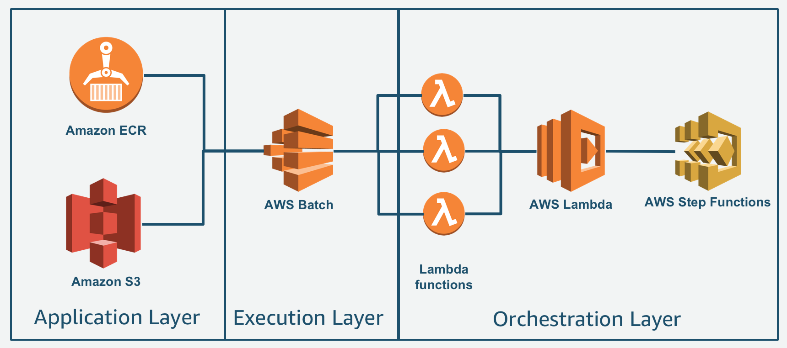
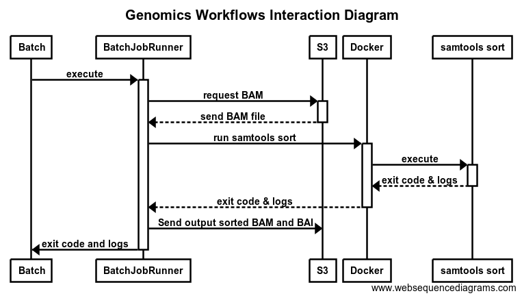

Leveraging AWS-native services for genomics workflows
A system for defining and executing genomics workflows can be subdivided into three main service areas.
- Services for managing applications and data.
- Serivces for individual task execution.
- Orchastration services that manage the execution of processes and the flow of data between tasks.
The following diagram illustrates a reference AWS architecture for these three service layers.

For data, we leverage Amazon S3 as the source of truth. All input and output data are staged to/from S3 as part of the task. Applications are deployed as Docker containers, and Amazon Elastic Container Registry is used to hold our Docker container images.
For task scheduling and execution, we rely on AWS Batch.
For orchastration between tasks, the combination of AWS Step Functions and AWS Lambda provide a robust mechanism to orchastrate complex workflows by interacting directly with AWS Batch.
In the next few sections, we will cover an example of how to impement a workflow system that leverages AWS Step Functions with AWS Lambda.
Requirements for AWS Batch Jobs
AWS Batch does not make assumptions on the structure and requirements that Jobs take with respect to inputs and outputs. Batch Jobs may take data streams, files, or only parameters as input, and produce the same variaty for output, inclusive of files, metadata changes, updates to databases, etc. The space is so varied, Batch assumes that each application handles their input/output requirements.
A common pattern for bioinformatics, however, is that files such as images or genomic sequence data are the inputs to some process, and outputs of that process are also files. Many bioinformatics tools have also been developed to run in traditional Linux-based compute clusters with shared filesystems, and are not necessarily optimized for cloud computing. In all the set of common requirements are for genomics on AWS Batch are:
Container placement
To make your workflow as flexible as possible, each job should run independently. As a result, you cannot necessarily guarantee that different jobs in the same overall workflow run on the same instance. Using S3 as the location to exchange data between containers enables you to decouple storage of your intermediate files from compute.
Multitenancy
Multiple container jobs may run concurrently on the same instance. In these situations, it’s essential that your job writes to a unique subdirectory.
Cleanup
As your jobs complete and write the output back to S3, it is a good idea to delete the scratch data on your instance generated by that job. This allows you to optimize for cost by reusing EC2 instances if there are jobs remaining in the queue, rather than terminating the EC2 instances.
Job management using a container
Since these requirements are commonplace, other bioinformatics-focused workflow systems, such as Nextflow, have support for data staging, etc. For a system based on AWS Step Functions and AWS Lambda, we will leverage a Docker container to handle the data staging and multitenancy requirements. The container will launch the application of interest, such as SAMTools, as a sibling container process.
Separating the application's container from the AWS Batch requirements of running an application allows for leveraging 3rd party tools easier, and also allows for management of the functionality of the workflow system to be independent from the application's runtime needs. The diagram below represents the interaction between AWS Batch, Amazon S3, the job management container (BatchJobRunner), and the application's container (samtools):

As you can see, the job management container can handle the requirements for most bioinformatics applications. You can also extend this container beyond the basics to perform other functions, such as sending real-time resource utilization and other runtime information for the application to a central monitoring service.
Next we cover how to build a basic job management container